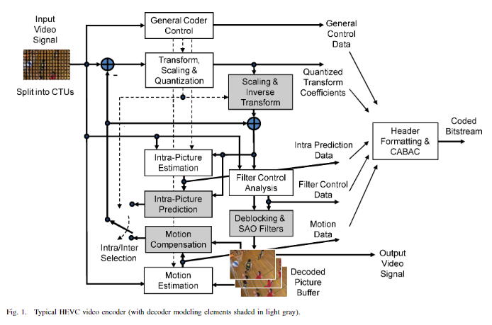

C-2 HEVC 的基本流程
1 基本流程
1.1 流程示意图
HEVC 编码基本流程示意图如下（图来自 C-1 中提到的英文书）

1.2 流程概述
HEVC 的具体流程为首先对图片进行分块操作，然后以块为单位对图片进行帧内编码或帧间编码，然后进行帧内编码预测或帧间编码预测得到图片的第一次重建图像（称为预测图像），拿图片原图减去第一次重建图像得到残差，将残差进行DCT变换、量化再进行反 DCT 变换得到重建残差，将第一次重建图像加上重建残差得到第二次重建图像，第二次重建图像进行环路滤波（in-loop filter）得到得到第三次重建图像（称为重建图像），第三次重建图像是最终解码的结果，将其存入 buffer 用作编码顺序之后帧帧间编码的参考，编码中产生的帧内/帧间编码的数据和残差（以及其它控制信号）则经过熵编码之后作为编码输出，之后帧的编码过程与此相同
由图可知，HEVC 的编码器中嵌套了一个完整的解码器
2 补充笔记
2.1 混合编码
HEVC 使用基于块的混合编码技术，混合是指其同时使用了预测编码和变换编码的技术，预测编码指其利用时域和空域的邻近像素预测当前像素值，之后传输实际值与预测值之差（残差），变换编码指其对残差执行了 DCT 变换，传输其量化后的非零 DCT 系数
混合编码 百度百科: 地址
预测编码 维基百科: 地址
变换编码 维基百科: 地址
2.2 残差
为什么要使用残差？
因为条件熵 \( H(Z|X,Y) \) 总是小于等于非条件熵 \( H(Z) \) （证明见信息论第二讲 pdf 第 35 页，互信息非负），所以残差所含的信息要比原信号所含的信息要少（因为求取残差的过程用到了时域或空域邻近的像素块进行预测，也就是“已知条件”），所以残差能用更少的比特进行表示
注：条件熵有两种，一种是 \( H(Z|Y=y) \)，一种是 \( H(Z|Y) \)，前者不一定小于非条件熵 \( H(Z) \)，后者一定小于非条件熵